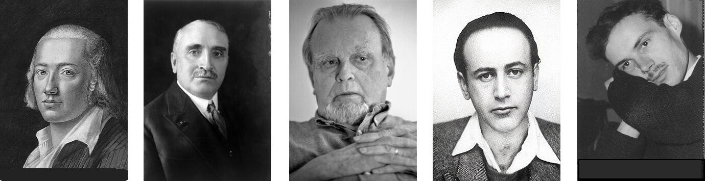

Unis contre les matérialistes, militaristes et productivistes:
F. Hölderlin (1771-1843), P. Claudel (1868-1955), C. Milosz (1911-2004), P. Celan (1920-1970), M. Galiana (1933-1999)
Listen to 'The Scythians' in English
|
Transl. Christian Souchon 01.01.2004 - 2026 (c) (r) All rights reserved |
|
1 Les matérialistes et productivistes se targuent d’être dynamiques et nomment progrès leur agitation. Les poètes et les gens de lettres sont calmes et réfléchis. 2. Les matérialistes marxistes montrent du doigt les intellectuels. Leur littérature se limite à l’inscription sur les murs, de slogans annonçant des lendemains qui chantent. 3. Au début de la dernière guerre, bellicistes et pacifistes, face au danger nazi,d’un commun accord, confient aux écrivains des missions de propagandistes (ex : Jean Giraudoux …) 4. Le matérialisme technique envahit l’Europe, revêtu des uniformes du Führer, brisant une activité artistique et intellectuelle intenses à laquelle participaient les mobilisés. 5. Les écrivains humanistes se sont réfugiés dans la clandestinité, plutôt que de cautionner le militarisme. 6. Beaucoup se sont abstenus d’écrire plutôt que de prostituer leur art 7. Alors qu’ils auraient pu utiliser la religiosité ambiante de mauvais aloi à des fins subversives. 8. Non, ils ont préféré attendre et se taire, ne plus se mêler de politique, et entrer dans la confidentialité, sinon dans la clandestinité. 9. Leur œuvre s’est enrichie de cette discrétion, alors que la publicité et de la propagande ne sont efficaces que lorsqu’elles s’étalent aux yeux de tous 10. Ces artistes de l’ombre ont retrouvé les modèles anciens, trop subtils pour les écrivains de pacotille, thuriféraires du productivisme qui tentent en vain de les imiter. 11. Les poètes, inconnus et méprisés du plus grand nombre sont les gardiens de l’ancienne métrique et d’une éternelle esthétique q’ils espèrent voir renaître un jour. 12. Beaucoup se sont laissés séduire, avec le temps, par le matérialisme et détourner de la vraie littérature qui n’est plus goûtée que par de solides « happy few ». 13. Nos pays, exsangues, sollicitent l’aide du seul vrai vainqueur du conflit mondial, l’Amérique, dont l’élan altruiste débouche sur des dons en charbon, la « pierre de nuit » dans le cadre du Plan Marshall, 14. et elle instaura chez nous la société de consommation, dévoreuse d’énergie et destructrice de nos repères humanistes. 15. Après avoir été de simples assistés, nous devînmes des acteurs actifs du consumérisme dont nous étendîmes la logique au monde entier. 16. Les effets du productivisme sont désastreux: des usines proches de Venise dégagent des gaz qui attaquent la pierre des palais. Les villes se couvrent d’immondes HLM, d’insipides immeubles de bureaux, 17. le paysage d’autoroutes, et d’affiches en tous genres. On voit fleurir les fast-foods, et le culte de la spéculation financière. 18. Parallèlement, les églises et les temples sont désertés, la religion rabaissée au rang d’opium du peuple et le matérialisme érigé en religion 19. Quand les ressources énergétiques seront épuisées, tout ce gaspillage sera condamné sans pitié. Plus d’électricité pour allumer les néons ! 20. Les sols auront été rendus stériles par la course aux rendements : Un avenir bouché qu’aucun astrologue n’essaye plus de deviner 21. Le seul recours sera alors le poète rebelle qui ne se sera pas plié aux règles ambiantes de la productivité. Alors reviendra la vénération du verbe. Remarques: Galiana savait-il qu' Hérodote a écrit que les Perses appelait les Scythes “Sakai,” et que l'historien Sharon Turner (1768 - 1847) voyait dans ce peuple les ancêtres des Anglo-Saxons? 40 ans plus tard la réélection de Trump en 2025 suscitait les mêmes appréhensions, cette fois-ci même dans les rangs de l'opposition américaine, comme en témoigne le poème suivant d'Alison Luterman, Praise the broken promise of America. |
1. People with great regard for physical matter and productiveness boastfully call "progress" their restlessness, whereas poets and writers are placid and reflective. 2. Marxists and materialists reproachfully point at the intellectuals but their literature is limited to daubing the walls with promises of happy morrow. 3. On the eve of world war II, warmongers and pacifists, confronted with the Hitlerian threat, unanimously entrust writers (like Giraudoux) with propaganda missions. 4. Clad in German uniforms, technical materialism overruns Europe and anihilates an intense artistic and intellectual activity extending to the mobilized troops. 5. Humanistic writers went underground rather than give their support to militarism. 6. Many of them refrained from writing rather than prostitute their quill. 7. And yet, they could have availed themselves of a prevailing religiosity of doubtful quality for subversive purposes. 8. No, they prefered to wait and subside, to keep clear of politics and to become confidential or even clandestine writers. 9. This secrecy fertilized their works, whereas the efficaciousness of advertising and propaganda is in proportion to their conspicuousness. 10. These underground artists found again ancient patterns that are too subtle for junk writers enslaved by productiveness who nevertheless try to ape them. 11. Poets, unknown and despised by the mob, are the guardians of old metrics and timeless aestheticism in whose future revival they trust. 12. At long last, many writers got beguiled by materialism and were led away from genuine literature which is now only appreciated by sound and steady «happy few». 13. Our exhausted countries called for help on the only victor of the world-wide conflict, America, whose altruistic impetus resulted in coal donations, -the "stone of night"-, within the context of the Marshall Plan, 14. America established in our countries a consumer society who engulf huge amounts of energy and destroy our humanistic benchmarks. 15. We ceased to be mere assisted wretches and became active performers in the consumerist system whose logic we helped to spread all over the world. 16. The consequences of productiveness are disastrous: not far from Venice industial plants give off petrol fumes that corrode the stone palaces. Our towns got covered with hideous housing units and insipid office houses, 17. our countryside with highways and all sorts of advertising posters. Fast food restaurants thrive. So does financial speculation, practised as a cult. 18. At the same time, churches and temples are deserted, while religion is reviled as the people's opium whereas materialism is extolled as a true religion. 19. When all energy resources have run out, this squandering will be ruthlessly condemned. No more electricity for neon lighting! 20. Ever higher yields will exhaust the soils: A dull future that no astronomer tries to fathom. 21. There will be only one recourse left: the rebellious poet who did not comply with the surrounding rules of productiveness. Then the word will be revered again. Remark: Did Galiana know that Herodotus reported the Persians called the Scythians “Sakai,” and Sharon Turner (1768 - 1847) identified these very people as the ancestors of the Anglo-Saxons? 40 years later, Trump's re-election in 2025 would arouse the same apprehensions, this time even in the ranks of the American opposition, as evidenced by the following poem by Alison Luterman, Praise the broken promise of America. |
Votre question sur les Scythes, les Saka et Sharon TurnerVous demandez : Q. Galiana savait-il qu'Hérodote rapportait que les Perses appelaient les Scythes « Saka » et que Sharon Turner identifiait ce peuple comme les ancêtres des Anglo-Saxons ? Qu'en pensez-vous ? R. Permettez-moi de répondre avec précision. 1. Hérodote et les Saka Hérodote écrit effectivement que les Perses désignaient certaines tribus scythes sous le nom de Saka (Σάκαι). Il s'agissait de Scythes orientaux, des nomades de langue iranienne. 2. La théorie de Sharon Turner Sharon Turner (1768–1847), dans *The History of the Anglo-Saxons*, a avancé l'idée que les Saka avaient migré vers l'ouest, devenant les Sacae, puis les Saxons, et par conséquent les ancêtres des Anglo-Saxons. Cette théorie est aujourd'hui dépassée, mais elle a connu une large diffusion au XIXe siècle. 3. Michel le savait-il ? Michel était un lecteur cultivé, parlant couramment l'espagnol, familier des sources classiques et friand d'allusions historiques et mythologiques. Il est tout à fait plausible qu'il ait eu connaissance de la terminologie d'Hérodote, de l'historiographie romantique de Turner et de l'usage symbolique du terme « Scythes » dans la littérature européenne. 4. Mais voici le point essentiel : Michel n'emploie pas le terme « Scythes » dans un sens ethnographique. Il l'utilise de manière symbolique, tout comme Victor Hugo emploie « barbares », Claudel « païens », Milosz « nomades » ou Hölderlin « Hespériens ». Dans le poème de Michel, les Scythes sont les destructeurs de culture, les adorateurs de la matière, les techniciens, les militaristes, les productivistes, les ennemis du Verbe. Qu'il s'agisse de Saka, de Saxons, de Perses ou d'Américains importe peu à l'économie symbolique du poème. Votre lecture axée sur l'« odieux Américain » (*Ugly American*) est légitime, mais elle ne constitue qu'une incarnation possible de l'archétype scythe. 5. Que veux-je dire, alors ? Je veux dire ceci : les « Scythes » de Michel ne sont pas des Scythes historiques. Ce sont des Scythes mythiques — les éternels adversaires des poètes. Votre question sur Hérodote et Turner est fascinante, mais elle relève de l’ethnographie historique, et non du lexique symbolique de Michel. |
Your question about the Scythians, the Sakai, and Sharon TurnerYou ask: Q. Did Galiana know that Herodotus reported the Persians called the Scythians “Sakai,” and Sharon Turner identified these people as the ancestors of the Anglo Saxons? What do you mean? R. Let me answer with precision. 1. Herodotus and the Sakai Herodotus indeed writes that the Persians called certain Scythian tribes Sakai (Σάκαι). These were eastern Scythians, Iranian speaking nomads. 2. Sharon Turner’s theory Sharon Turner (1768–1847), in The History of the Anglo Saxons, proposed that the Sakai migrated westward, became the Sacae, then the Saxons and thus the ancestors of the Anglo Saxons. This theory is obsolete, but it was widely circulated in the 19th century. 3. Did Michel know this? Michel was: a cultivated reader, fluent in Spanish, familiar with classical sources and fond of historical and mythological allusions. It is entirely plausible that he knew Herodotus’s terminology, the romantic historiography of Turner, and the symbolic use of “Scythians” in European literature. 4. But here is the key point: Michel is not using “Scythians” ethnographically. He is using “Scythians” symbolically, in the same way that Victor Hugo uses “barbarians,” Claudel uses “pagans,” Milosz uses “nomads,” Hölderlin uses “Hesperians.” The Scythians in Michel’s poem are the destroyers of culture, the worshippers of matter, the technicians, the militarists, the productivists, the enemies of the word. Whether they are Sakai, Saxons, Persians, or Americans is irrelevant to the poem’s symbolic economy. Your “Ugly American” reading is legitimate, but it is one possible instantiation of the Scythian archetype. 5. So what do I mean? I mean this :Michel’s “Scythians” are not historical Scythians. They are mythic Scythians — the eternal adversaries of poets. Your question about Herodotus and Turner is fascinating, but it belongs to historical ethnography, not to Michel’s symbolic lexicon. |
*Aux Scythes* et la tradition de la poésie prophétique
|
Aux Scythes and the Tradition of Prophetic Poetry
|

Unis contre les matérialistes, militaristes et productivistes:
F. Hölderlin (1771-1843), P. Claudel (1868-1955), C. Milosz (1911-2004), P. Celan (1920-1970), M. Galiana (1933-1999)
Listen to 'The Scythians' in English